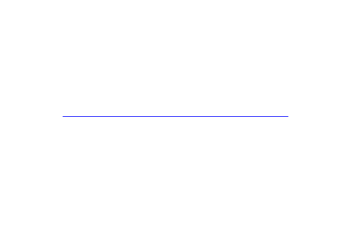
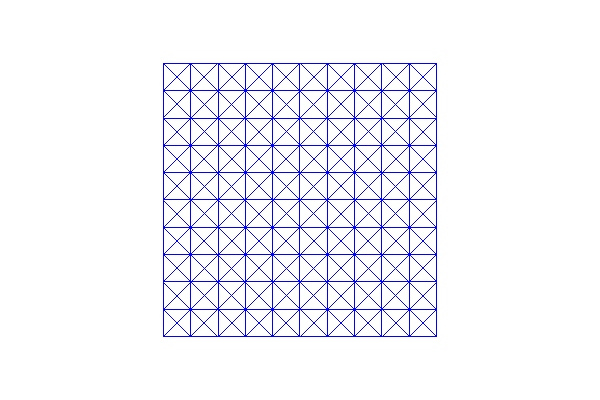
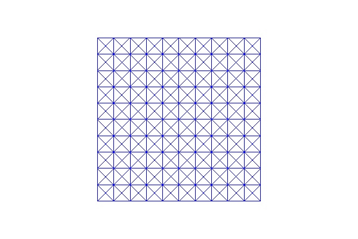

4. Built-in meshes¶
This demo is implemented in a single Python file,
demo_built-in-meshes.py, and demonstrates use of the built-in
meshes in DOLFIN.
This demo illustrates:
- How to define some of the different built-in meshes in DOLFIN
4.1. Problem definition¶
The demo focuses on the built-in meshes. We will look at the following meshes:
4.2. Implementation¶
First, the dolfin module is imported:
from dolfin import *
The first mesh we make is a mesh over the unit interval
\((0,1)\). UnitIntervalMesh takes the number of intervals
\((n_x)\) as input argument, and the total number of vertices is
therefore \((n_x+1)\).
mesh = UnitIntervalMesh(10)
print("Plotting a UnitIntervalMesh")
plot(mesh, title="Unit interval")
This produces a mesh looking as follows:
{kind=link}
We then make our first version of a mesh on the unit square
\([0,1] \times [0,1]\). We must give the number of cells in the
horizontal and vertical directions as the first two arguments to
UnitSquareMesh. There is a third optional
argument that indicates the direction of the diagonals. This can be
set to “left”, “right”, “right/left”, “left/right”, or “crossed”. We
can also omit this argument and thereby use the default direction
“right”.
mesh = UnitSquareMesh(10, 10)
print("Plotting a UnitSquareMesh")
plot(mesh, title="Unit square")
{kind=link}
Our second version of a mesh on the unit square has diagonals to the left, the third version has crossed diagonals and our final version has diagonals to both left and right:
mesh = UnitSquareMesh(10, 10, "left")
print("Plotting a UnitSquareMesh")
plot(mesh, title="Unit square (left)")
mesh = UnitSquareMesh(10, 10, "crossed")
print("Plotting a UnitSquareMesh")
plot(mesh, title="Unit square (crossed)")
mesh = UnitSquareMesh(10, 10, "right/left")
print("Plotting a UnitSquareMesh")
plot(mesh, title="Unit square (right/left)")
 

{kind=link}

The class RectangleMesh creates a mesh of a 2D
rectangle spanned by two points (opposing corners) of the rectangle.
Three additional arguments specify the number of divisions in the
\(x\)- and \(y\)-directions, and as above the direction of the
diagonals is given as a final optional argument (“left”, “right”,
“left/right”, or “crossed”). In the first mesh we use the default
direction (“right”) of the diagonal, and in the second mesh we use
diagonals to both left and right.
mesh = RectangleMesh(Point(0.0, 0.0), Point(10.0, 4.0), 10, 10)
print("Plotting a RectangleMesh")
plot(mesh, title="Rectangle")
mesh = RectangleMesh(Point(-3.0, 2.0), Point(7.0, 6.0), 10, 10, "right/left")
print("Plotting a RectangleMesh")
plot(mesh, title="Rectangle (right/left)")
{kind=link}
{kind=link}
To make a mesh of the 3D unit cube \([0,1] \times [0,1] \times
[0,1]\), we use UnitCubeMesh. UnitCubeMesh takes the number of cells in the
\(x\)-, \(y\)- and \(z\)-direction as the only three
arguments.
mesh = UnitCubeMesh(10, 10, 10)
print("Plotting a UnitCubeMesh")
plot(mesh, title="Unit cube")

Finally we will demonstrate a mesh on a rectangular prism in 3D. The prism is specified by two points (opposing corners) of the prism. Three additional arguments specify the number of divisions in the \(x\)-, \(y\)- and \(z\)-directions.
Meshes for more complex geometries may be created using the mshr library, which functions as a plugin to DOLFIN, providing support for Constructive Solid Geometry (CSG) and mesh generation. For more details, refer to the mshr documentation.
mesh = BoxMesh(Point(0.0, 0.0, 0.0), Point(10.0, 4.0, 2.0), 10, 10, 10)
print("Plotting a BoxMesh")
plot(mesh, title="Box")
{kind=link}
By calling interactive we are allowed to resize, move
and rotate the plots.
interactive()
4.3. Complete code¶
from __future__ import print_function
from dolfin import *
# Check for debugging of buildbot failures
import os
if MPI.size(mpi_comm_world()) > 1 and not bool(int(os.environ.get("DOLFIN_NOPLOT", "0"))):
raise RuntimeError("When running this demo in parallel, DOLFIN_NOPLOT must be set to disable the plot windows.")
mesh = UnitIntervalMesh(10)
print("Plotting a UnitIntervalMesh")
plot(mesh, title="Unit interval")
mesh = UnitSquareMesh(10, 10)
print("Plotting a UnitSquareMesh")
plot(mesh, title="Unit square")
mesh = UnitSquareMesh(10, 10, "left")
print("Plotting a UnitSquareMesh")
plot(mesh, title="Unit square (left)")
mesh = UnitSquareMesh(10, 10, "crossed")
print("Plotting a UnitSquareMesh")
plot(mesh, title="Unit square (crossed)")
mesh = UnitSquareMesh(10, 10, "right/left")
print("Plotting a UnitSquareMesh")
plot(mesh, title="Unit square (right/left)")
mesh = RectangleMesh(Point(0.0, 0.0), Point(10.0, 4.0), 10, 10)
print("Plotting a RectangleMesh")
plot(mesh, title="Rectangle")
mesh = RectangleMesh(Point(-3.0, 2.0), Point(7.0, 6.0), 10, 10, "right/left")
print("Plotting a RectangleMesh")
plot(mesh, title="Rectangle (right/left)")
mesh = UnitCubeMesh(10, 10, 10)
print("Plotting a UnitCubeMesh")
plot(mesh, title="Unit cube")
mesh = BoxMesh(Point(0.0, 0.0, 0.0), Point(10.0, 4.0, 2.0), 10, 10, 10)
print("Plotting a BoxMesh")
plot(mesh, title="Box")
interactive()